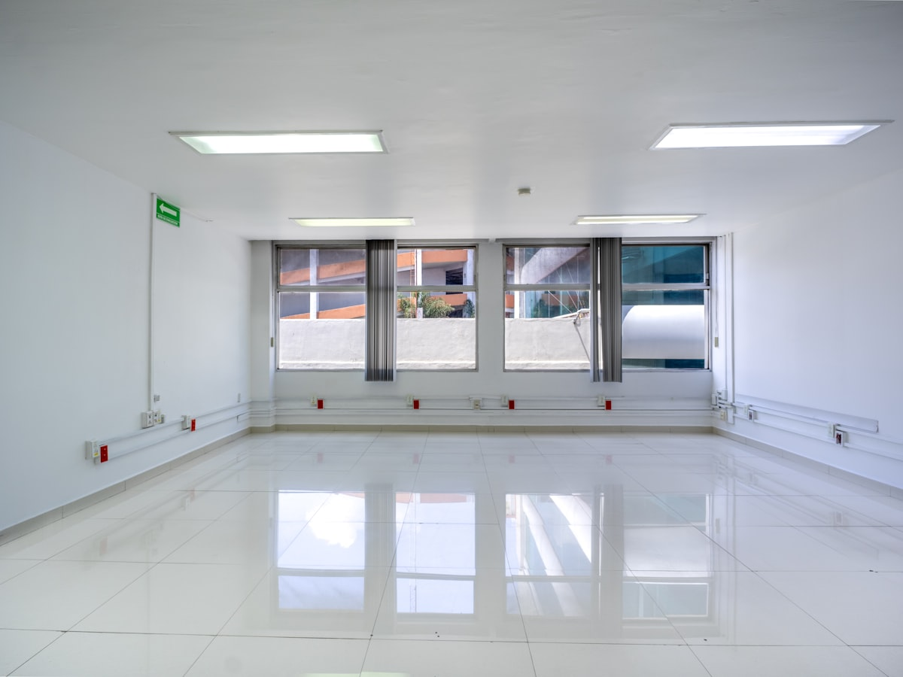
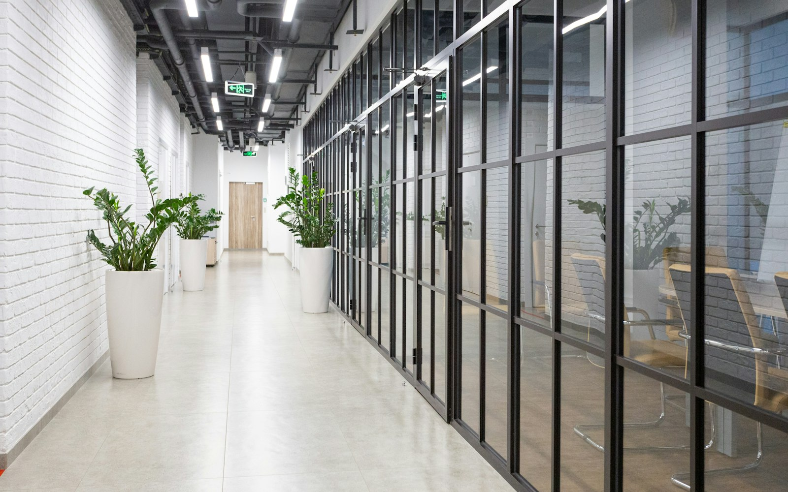
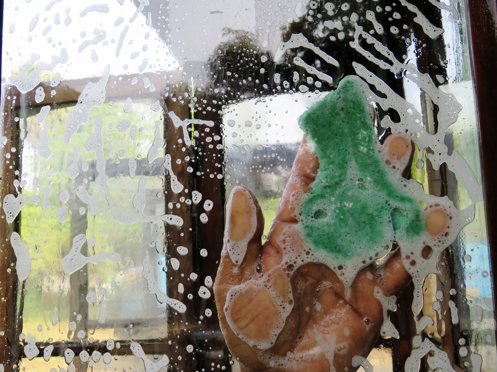
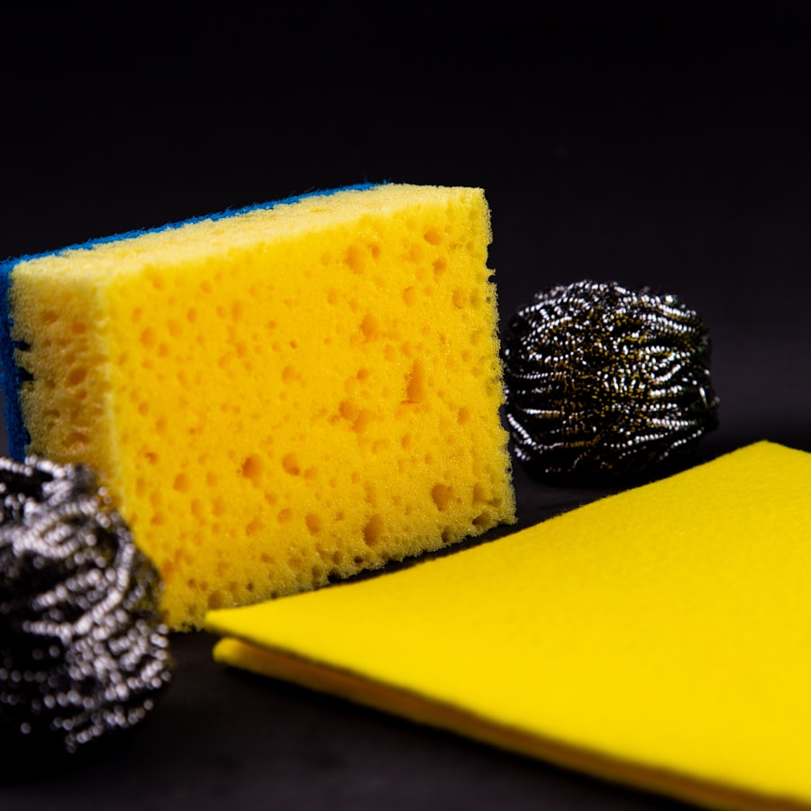

Beispielfoto (Symbolbild)Gebäudereinigung
Unterhalts- und Grundreinigung für Büro-, Treppenhaus- und Gewerbeflächen — regelmäßig oder nach Bedarf.
Beispiel-Leistungsspektrum — Details klären wir am Telefon. Anfragen →Gebäudereinigung, Glasreinigung und Kurierdienst aus Mosbach-Diedesheim — sorgfältig ausgeführt und in wenigen Schritten angefragt.

Drei Leistungen, die den Betrieb ausmachen — wählen Sie direkt die passende aus und schicken Sie Ihre Anfrage in wenigen Schritten los.

Beispielfoto (Symbolbild)Unterhalts- und Grundreinigung für Büro-, Treppenhaus- und Gewerbeflächen — regelmäßig oder nach Bedarf.
Beispiel-Leistungsspektrum — Details klären wir am Telefon. Anfragen →
Beispielfoto (Symbolbild)Fenster, Fassadenglas und Vitrinen streifenfrei sauber — vom einzelnen Schaufenster bis zur ganzen Etage.
Beispiel-Leistungsspektrum — Details klären wir am Telefon. Anfragen →Zustellungen und Botengänge zuverlässig erledigt — praktisch, wenn neben der Reinigung noch ein Weg ansteht.
Beispiel-Leistungsspektrum — Details klären wir am Telefon. Anfragen →Zwei Angaben genügen — der Bedarfsrechner zeigt sofort, welches System zu Ihrer Fläche passt. Die passende Pauschale legen wir dann bei der Besichtigung fest.
Bei 150 m² und 1× wöchentlicher Reinigung passt dieses System zu Ihrem Bedarf.
Dieses System anfragen →Oder direkt ein System wählen:
Kleinere Flächen wie eine Praxis oder ein kleines Büro — Reinigung 1× wöchentlich.
Beispiel-System — die passende Pauschale legen wir bei der Besichtigung fest. System anfragen →Mittlere Gewerbeflächen — Reinigung mehrmals wöchentlich.
Beispiel-System — die passende Pauschale legen wir bei der Besichtigung fest. System anfragen →Größere Flächen mit hohem Aufkommen — täglich oder in individuellem Rhythmus.
Beispiel-System — die passende Pauschale legen wir bei der Besichtigung fest. System anfragen →5/5 · 2 Bewertungen bei Google — eine kleine Zahl, aber ein klares Bild: zuverlässig und sorgfältig, Termin für Termin.

Beispielfoto (Symbolbild)Gebäudereinigung ist Vertrauenssache — deshalb legen wir Wert auf Sorgfalt, Zuverlässigkeit und klare Absprachen, von der ersten Anfrage bis zum fertigen Termin.
Online oder telefonisch — Sie wählen das passende Beispiel-System für Ihre Fläche.
Wir schauen uns die Fläche gemeinsam mit Ihnen an.
Monatlicher Fixpreis, keine Überraschungen — und die Reinigung startet.
Beispiel-Ablauf der Konzeptvorschau — den tatsächlichen Ablauf stimmt der Betrieb mit Ihnen ab.
Beispiel-Fragen der Konzeptvorschau — echte FAQ folgen nach Freigabe.
Ja — neben Gewerbeflächen übernehmen wir auch Reinigungen für Privathaushalte.
Sie wählen ein System, wir besichtigen die Fläche zeitnah vor Ort und vereinbaren direkt im Anschluss die passende Pauschale.
Ja — ob einmalig oder als regelmäßiges System, das passende System stimmen wir bei der Besichtigung gemeinsam mit Ihnen ab.